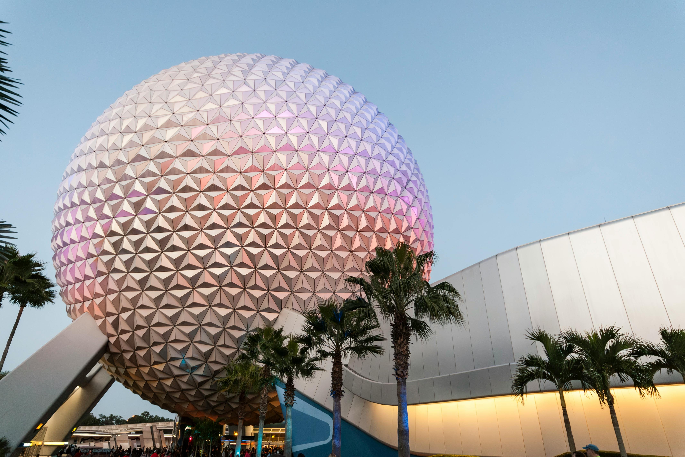

Fan-made for CS50 • Not affiliated with Disney
Fan-made for CS50 • Not affiliated with Disney

EPCOT (Experimental Prototype Community of Tomorrow) is a theme park at Walt Disney World Resort in Bay Lake, Florida.
It opened on October 1, 1982, as the second park in the resort,
following the Magic Kingdom.
Originally conceived by Walt Disney himself, EPCOT was intended to be a real, functioning city that would showcase futuristic living and cutting-edge technology.
After Walt's death in 1966, the concept evolved into a theme park celebrating innovation and global culture, rather than a working city.
The park was designed around two main areas:
In recent years, EPCOT has undergone a major transformation, with Future World being replaced by three new neighborhoods: World Discovery, World Nature, and World Celebration, while World Showcase continues to thrive with cultural experiences and festivals like the International Food & Wine Festival. Today, EPCOT is known for blending education with entertainment, reflecting Walt Disney’s original vision of innovation and international understanding.
© 1966 The Walt Disney Company. All rights reserved.